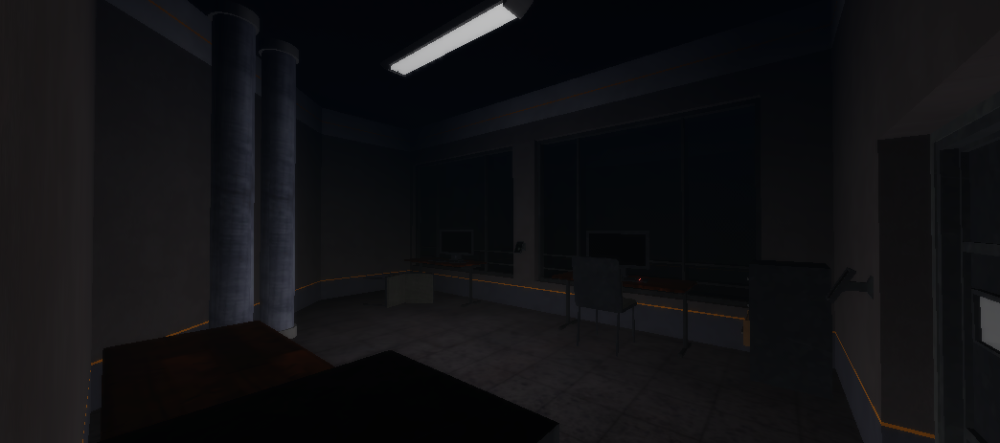
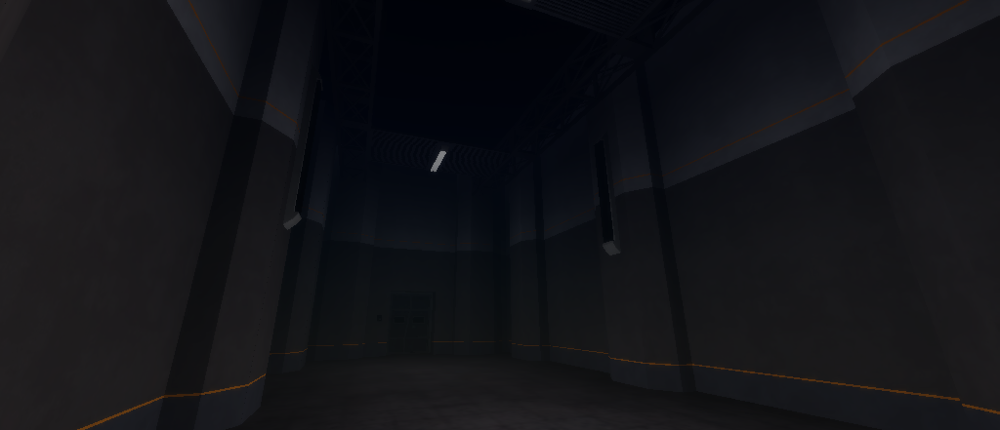
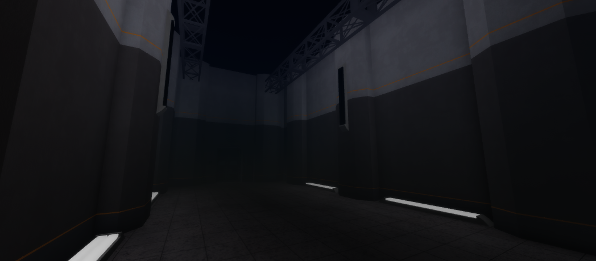
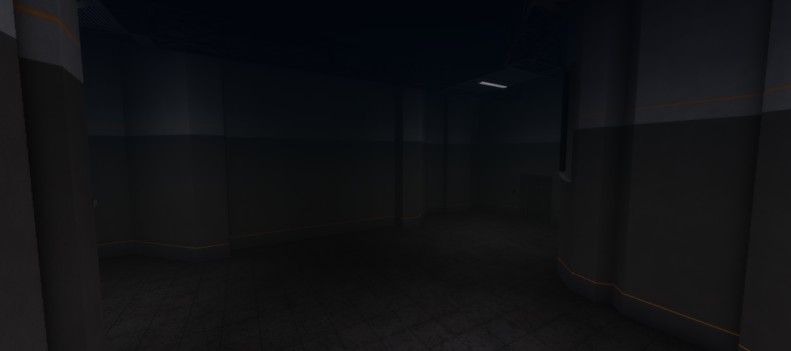
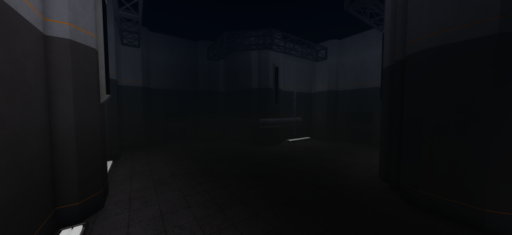
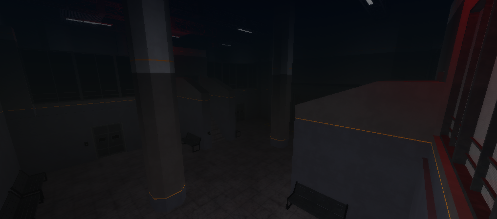

Overview
The Light Containment Zone (LCZ) is the first major area players explore in the facility. Its designed to contain less dangerous SCPs and is relatively safer than other zones. It features hallways, containment chambers, and utility rooms, but its far from harmless, hazards, security measures, and unexpected SCP encounters can still appear at any moment.
2. Hallways
2.1. Small Testing Room
The area is split into two sections: a viewing area, which overlooks the chamber through large reinforced windows, and the testing room, a small space accessible through a secured door.
Items that can be found:
2.2. Two-Way Hallway
Version-A
2.2. Two-Way Hallway
Version-C
4. T-Shaped
4.1. T-Shaped Hallway
Version-A
4.2. T-Shaped Hallway
Version-B
5. Four-Way
5.1. Storeroom
The storeroom includes a walkway with a door leading to a lower level containing benches and a blast door. Opposite the hallway are two entrances to a large storage area. A security camera is positioned near the center door.
Items that can be found:
Security Notice
All LCZ areas are monitored and recorded. Any attempt to tamper with security systems, enter restricted zones, or communicate with anomalies will result in immediate termination of clearance status.